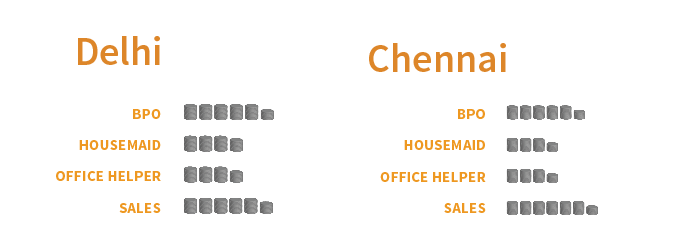

FOLO
Understanding salary patterns of 4 sectors of jobs, across the metropolitan cities in India
← all projects
↓ ↑
The infographic tries to examine, first, the mean salaries for the 4 categories in the metropolitans of India
Then, also important is the standard deviation of this salary figure, w.r.t to the the highest and the lowest, for that category.